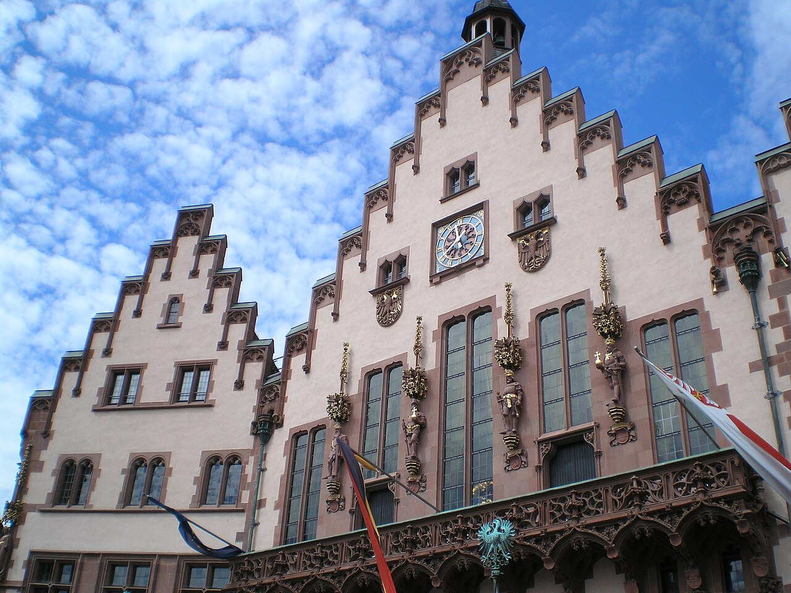
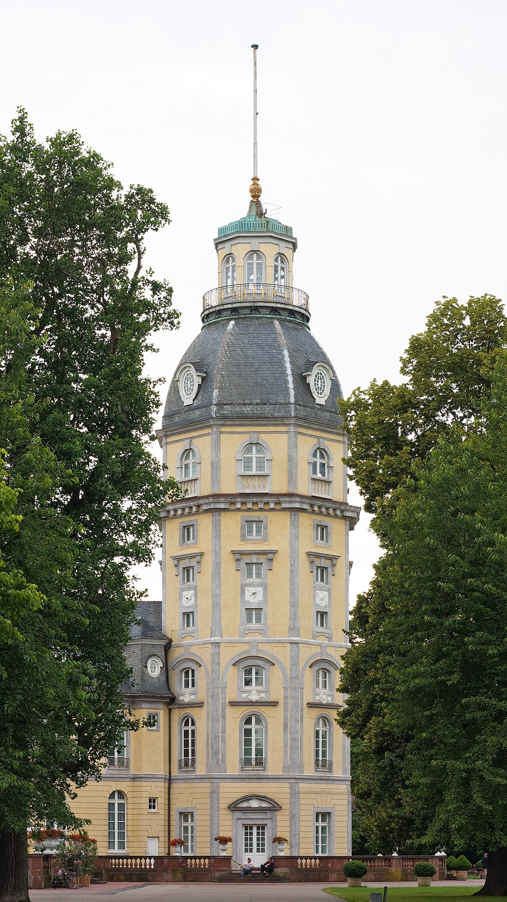
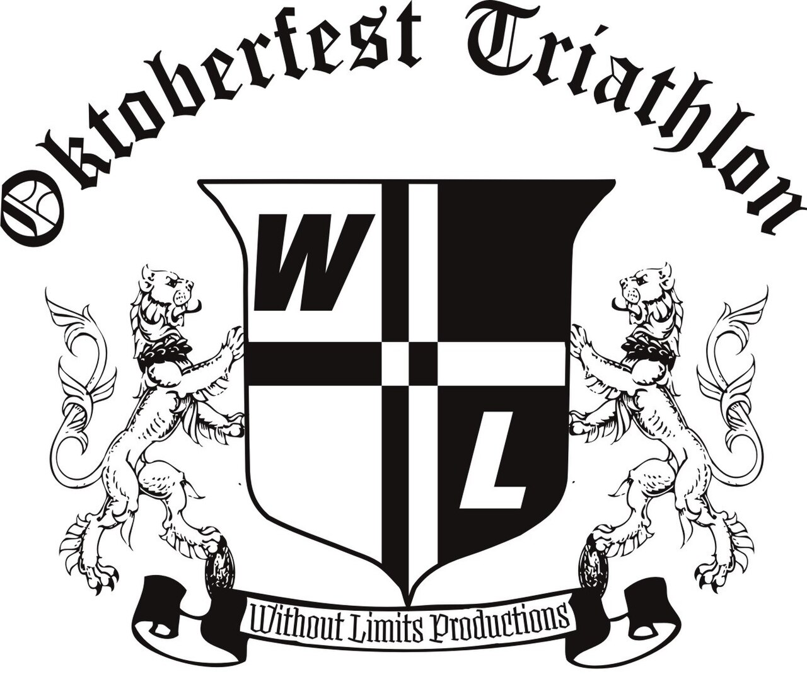
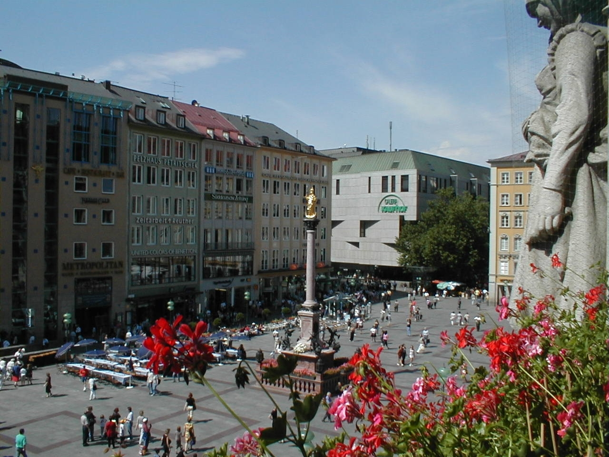
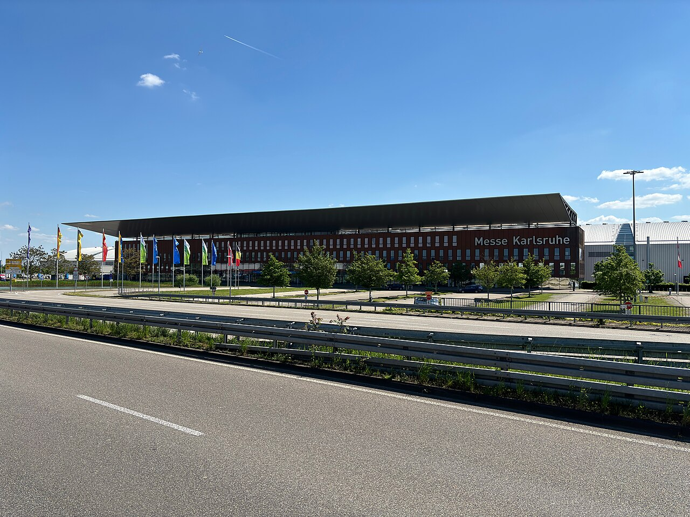
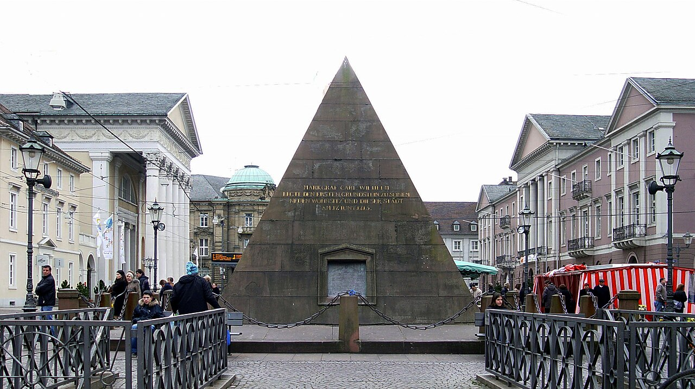
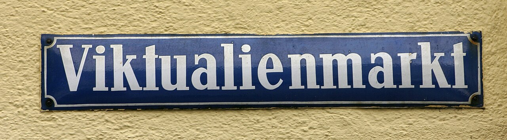
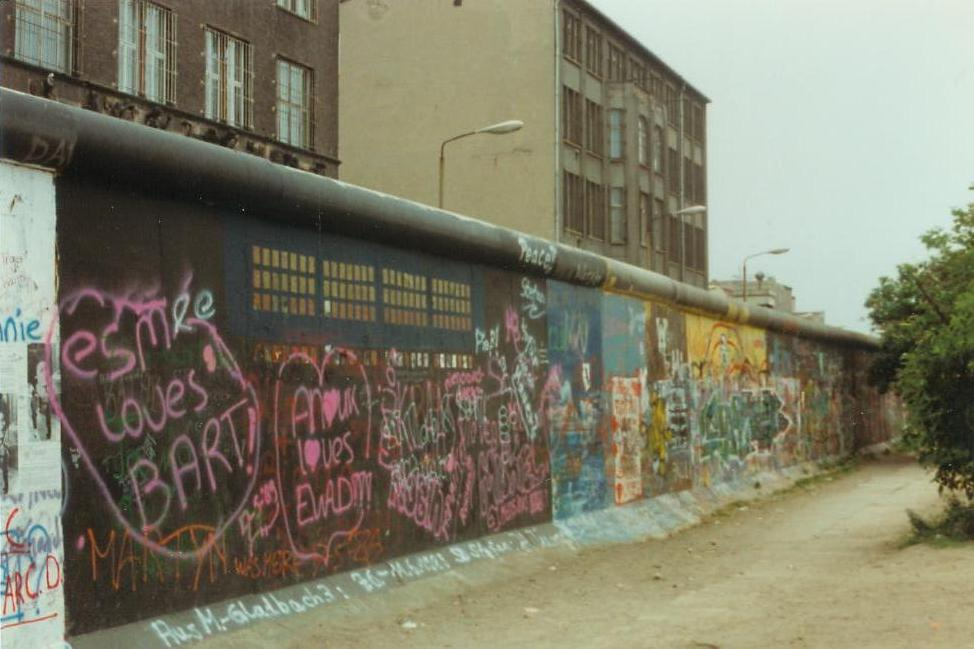

Frankfurt to Karlsruhe to Munich to Berlin
Sep 29–Oct 6, 2026 · JFK overnight → light Frankfurt → HYROX Karlsruhe → Oktoberfest → Berlin home. Race days stay light on purpose.
Icons we actually hit · not walking-tour filler





Each stop
Neighborhood we sleep in, what we do, the icons that would sting to miss. Frankfurt and Karlsruhe are race-capped · we do not pretend they are full city days.
Bahnhofsviertel · IntercityHotel Hbf Süd
Land morning Sep 30. Mannheimer Str. 21 · south exit of the station you board at 10:20a Oct 1. Light walk, sit-down food, early night.
- Icon: Römerberg / old town · walk or one U-Bahn stop, photo, coffee, back. Main river if you still have legs.
- Safe: Station block is mixed at night. Sleep here for the 10:20 ICE, do not hang around Hbf. Römerberg is the walk. Taxi or one U-Bahn, then back to the hotel.
- Skip: any Frankfurt walking tour, museums, Palmengarten. Race is tomorrow.
Hauptbahnhof
One night · hotel not named yet. HYROX is at Messe Karlsruhe (Halle 3, Rheinstetten). Sleep at Karlsruhe Hbf so the Oct 2 12:00 train is a walk with bags, then taxi to Messe on race day.
- Icons: Schloss + fan-shaped city, pyramid on Marktplatz. That’s the postcard. Do it Oct 2 morning only if you can still walk and still make the train with bags.
- Safe: Karlsruhe Hbf / Innenstadt is ordinary German-city fine. Pick the hotel at the station, not a far suburb. Race day is taxi to Messe, not a night wander.
- Skip: city walking tour, ZKM lecture, anything that needs a 2p start on race day.
Fürstenried · Hotel Olympia
Two nights at Maxhofstr. 23. Quiet south Munich, U3 Fürstenried West (~2 blocks). Not next to Hbf · Oct 2 arrive and Oct 4 leave are taxis with bags. Wiesn / Marienplatz are U3 without luggage.
- Icons: Wiesn tents, Marienplatz Glockenspiel, Viktualienmarkt. U3, not a history loop.
- Safe: Fürstenried is quiet residential. Very walkable, boring in a good way. Wiesn is crowded, not unsafe. U3 without bags.
- To book: Wiesn tent reservation tour (GYG 4.9 / 173+) on the full day Oct 3. Food tour listings that clear 4.7 sit under 150 reviews · DIY the market instead of a weak GYG.
Hackescher Markt · Mitte
Arrive Oct 4 afternoon. Classik Hotel, Große Präsidentenstr. 8 · this is the vibe neighborhood. Gate / Memorial are a walk or short Uber. Oct 6: taxi to BER with bags, or S9 from Hackescher Markt (~50 min) since the hotel sits on that station.
- Icons: Brandenburg Gate, Reichstag (outside, or official dome if a slot exists), East Side Gallery / Wall, Holocaust Memorial. Walk or Uber, photo, leave. Not a 3h Third Reich walking tour.
- Safe: Hackescher Markt / Mitte is the right Berlin base. Gate, Memorial, food tour are walks. East Side Gallery is Uber, daylight, then back to Mitte.
- To book: food tour on Oct 5 (the only full Berlin day). GYG downtown 8 tastings · 4.8 / 350+. Confirm the live count on the activity page before you pay.
Day by day
Tap a day. One big thing. Race days are hotel + venue, not sightseeing.
Tue Sep 29 · JFK overnight
Flight
Leave JFK sometime this evening. Typical LH JFK→FRA is mid-afternoon / early evening, land Frankfurt morning Sep 30. Shop the Teralink · do not lock a flight number until Capital One shows it.
Today JFK evening · overnight to FRA
Travel day
Tue Sep 29 · JFK overnight
Flight
Wed Sep 30 · Frankfurt, light
Frankfurt
Land morning. Taxi to IntercityHotel Hauptbahnhof Süd (Mannheimer Str. 21). Check-in is 3p · drop bags, nap if they let you up early. One easy loop: Römerberg. Sit-down dinner. In bed early. Race is tomorrow.
Today Land FRA · Intercity Hbf Süd · Römerberg photo · early night
Bahnhofsviertel · no GYG
Wed Sep 30 · Frankfurt, light
Frankfurt
Thu Oct 1 · Train + HYROX
Karlsruhe
Checkout Intercity. ICE Frankfurt Hbf 10:20a → Karlsruhe Hbf 11:23a. Karlsruhe hotel still TBD · pick one at Hbf, check-in from 11. Chill, bags down, get race-ready. Taxi to Messe Karlsruhe (Halle 3, Rheinstetten) for your wave. After: food and bed. Late is fine.
Today 10:20 train · KA hotel TBD · HYROX · done
Need a Karlsruhe Hbf hotel
Thu Oct 1 · Train + HYROX
Karlsruhe

Fri Oct 2 · Karlsruhe morning, then Munich
Karlsruhe → Munich
Checkout Karlsruhe. If legs work: Schloss + pyramid (Uber/tram, photo, leave). Bags stay at the KA hotel until the train. 12:00p–2:49p Karlsruhe → Munich. Taxi from München Hbf with bags to Hotel Olympia (Fürstenried) · do not U-Bahn that hop with luggage. Evening: U3 to the Wiesn without bags.
Today Optional Schloss · 12:00 ICE · taxi to Olympia · Wiesn evening
Schloss only if you can still walk
Fri Oct 2 · Karlsruhe morning, then Munich
Karlsruhe → Munich
Sat Oct 3 · Oktoberfest (full day)
Munich
German Unity Day. Only full day in Munich. Morning: Marienplatz Glockenspiel + Viktualienmarkt (DIY food). Afternoon/evening: reserved Wiesn tent. This is the booked experience. Do not add a museum walking tour.
Today Marienplatz · market · reserved tent
Fürstenried · U3 to Wiesn
Sat Oct 3 · Oktoberfest (full day)
Munich
Sun Oct 4 · Munich to Berlin
Berlin
Oktoberfest’s last day · you leave instead. Taxi Olympia → München Hbf with bags (leave ~9:00a). 10:22a → Berlin Hbf 2:24p. Taxi to Classik Hotel Hackescher Markt (self check-in · have the codes). Afternoon: Gate + Reichstag + Memorial on foot from Mitte. Easy dinner. Food tour Monday.
Today Taxi to Hbf · 10:22 train · Classik · Gate
Hackescher Markt / Mitte
Sun Oct 4 · Munich to Berlin
Berlin
Mon Oct 5 · Berlin full day
Berlin
Only full day. Food tour is how we meet the city. Then East Side Gallery / Wall · the icon that would sting to miss. Not a 3-hour history lecture.
Today Food tour · Wall · leftover Mitte
Mitte / Friedrichshain
Mon Oct 5 · Berlin full day
Berlin
Tue Oct 6 · Berlin to JFK
Flight
Morning departure from BER. Taxi from Classik with bags (simplest). S9 from Hackescher Markt is ~50 min if you prefer the train next door. Shop the Teralink. International buffer 3h.
Today Checkout · taxi BER · fly JFK
Travel day
Tue Oct 6 · Berlin to JFK
FlightCost snapshot (per person)
Air / hotels / trains from what you paid (air is the ~$800 you remembered). Tours, food, and taxis are still estimates.
| Category | Per person | Basis |
|---|---|---|
| Flights | ~$800 | JFK→FRA + BER→JFK · you said ~$800 total · split unknown |
| Hotels | $422 | Your number · Intercity + Olympia + Classik · Karlsruhe still unnamed |
| Trains | $145 | ICE FRA–KA, KA–MUC, MUC–BER |
| Tours | ~$195 | Wiesn tent ~$120 + Berlin food ~$75 · not booked yet |
| Food | ~$320 | Race-light days cheaper · Wiesn extra · estimate |
| Local | ~$110 | FRA taxi, Messe taxi, Munich Hbf↔Olympia taxis, BER taxi · estimate |
| Total | ~$1,992 | Locked $1,367 + ~$625 still soft |
Budget mix
Hover a slice · estimates until we shop
Tours to book
Hover a bar
GYG 4.7+ / 150+, active or food · not museum lectures. Food tour once per country: Berlin covers Germany (full day Oct 5). Munich’s listing is under 150. Frankfurt and Karlsruhe are race-capped anyway. Food TripAdvisor 4.7+ / 200+. Carry-on. Hotels at the train you board with bags. Race eve + race day = light only.
Still need from you
- Karlsruhe hotel: Oct 1 night is still blank. Need a Hbf property so you are not dragging bags after HYROX.
- HYROX wave: which division and start window on Oct 1 (Men morning vs Mixed Doubles evening changes the whole day).
- Flights: exact JFK→FRA and BER→JFK strings if you want the $800 split on the Teralink rows. Wave still needed.
- Who: just you, or a doubles partner on the same rooms?
Race rules (this trip)
HYROX Karlsruhe is Oct 1–4, 2026 at Messe Karlsruhe, Halle 3, Messeallee 1, Rheinstetten. You race Thursday and leave Friday noon, so you are not hanging around the expo weekend.
- Sep 30: walk, eat, sleep. No GYG.
- Oct 1: train, hotel, race. Optional 20 min stroll. After the race, food and bed.
- Oct 2 morning: Schloss / pyramid only if you can still walk and still make 12:00 with bags.
Coverage audit
- Frankfurt: Römerberg is the miss-it square. A 3h old-town tour the day before HYROX would be the stupid version.
- Karlsruhe: Schloss + pyramid are the icons. One morning is enough. ZKM is a museum day we don’t have.
- Munich: Wiesn is the icon. Marienplatz + Viktualienmarkt sit next to it. Residenz / BMW / Dachau are different trips. Munich food GYG at 4.8 / 142 fails the 150-review bar · market DIY + tent tour instead.
- Berlin: Gate, Reichstag, Wall, Memorial. TV Tower is optional. Classik is in Mitte · do not spend Oct 5 on a Third Reich walking tour while the Gate is a 20-minute walk.
Tours to book
| When | What | Each | Book? |
|---|---|---|---|
| Oct 3 | Oktoberfest reserved tent · GYG 4.9 / 173+ | ~$120 est. | Yes · Unity Day |
| Oct 5 | Berlin downtown food tour (8 tastings) · GYG 4.8 / 350+ · confirm live count on the activity page | ~$75 est. | Yes · only full Berlin day |
| Oct 3 morning | Munich Old Town food tour with 10+ tastings · GYG 4.8 / 142 · under 150 | skip | No · DIY Viktualienmarkt |
Bags, trains, check-in
- Carry-on only. Intercity Frankfurt has laundry/dry-cleaning · too tight for a same-night turn before the 10:20. Ask Olympia if they can do a drop Oct 2 / pick Oct 4 morning.
- Sep 30 FRA: taxi to Intercity Hbf Süd. Check-in 3p · drop bags at reception.
- Oct 1 10:20: 2 min walk from Intercity south exit. Platform ~10:00.
- Oct 1 Messe: taxi from the Karlsruhe Hbf hotel (still TBD). Bags stay there.
- Oct 2 12:00: checkout Karlsruhe with bags → ICE → taxi München Hbf to Olympia. Schloss only with a bag-drop still at the KA hotel. U3 to Wiesn without luggage.
- Oct 4 10:22: taxi Olympia → München Hbf with bags, leave ~9:00a. Not U-Bahn with luggage (U3 does not hit Hbf; you’d change at Sendlinger Tor).
- Oct 6 BER: taxi from Classik, or S9 at Hackescher Markt (~50 min). Leave with 3h international + transit.
Sun + neighborhoods
| Place | Sleep / walk | Sunrise | Sunset | The view |
|---|---|---|---|---|
| Frankfurt | IntercityHotel Hbf Süd. Römerberg is the one outing. | ~7:23a | ~7:05p | Main river if you have slack. No sunrise alarm after the red-eye. |
| Karlsruhe | Hbf hotel TBD. Schlossgarten is the postcard. | ~7:25a | ~7:03p | Oct 2 morning light on the Schloss if you go at all. |
| Munich | Hotel Olympia, Fürstenried. U3 to Wiesn / Marienplatz. | ~7:15a | ~6:50p | Bavaria statue / meadow Oct 2. Oct 3 you are in a tent. |
| Berlin | Classik, Hackescher Markt. Mitte walk for the Gate. Friedrichshain for the Wall. | ~7:12a | ~6:35p | Gate at dusk Oct 4 if the train wasn’t brutal. |
Flights
| Who | When | Route | Each |
|---|---|---|---|
| Alex | Tue to Wed Sep 29–30 | JFK to FRA overnight
Typical LH is mid-afternoon JFK → morning FRA. Confirm on Capital One. International: at JFK ~3h early. One confirmation only.
|
in ~$800 RT Teralink |
| Alex | Tue Oct 6 | BER to JFK morning
Leave Classik with bags. Taxi BER (or S9 Hackescher Markt). 3h international. Do not split a connection into two tickets.
|
in ~$800 RT Teralink |
You remembered ~$800 total for both long-hauls. Teralink still matches JFK→FRA Sep 29 and BER→JFK Oct 6, 1 adult. Don’t treat those shop links as a new fare.
Trains (times you gave)
- Thu Oct 1 · Frankfurt Hbf 10:20a–11:23a · Karlsruhe Hbf
- Fri Oct 2 · Karlsruhe Hbf 12:00p–2:49p · München Hbf
- Sun Oct 4 · München Hbf 10:22a–2:24p · Berlin Hbf
Book on bahn.com. $145 / person for the three ICEs. Seat reservation is worth it on Unity Day weekend.
Where we sleep
Named hotels below. $422 / person for the stay. Karlsruhe Oct 1 is the hole if that night isn’t already inside the $422.
| Hotel | Nights | Notes |
|---|---|---|
| Frankfurt IntercityHotel Hauptbahnhof Süd Mannheimer Str. 21 · Expedia 8.8 / 1,400+ |
Wed Sep 30 to Thu Oct 1 · 1 nt | South exit of Hbf · 2 min walk to the 10:20 ICE |
| Karlsruhe Still TBD · Hbf |
Thu Oct 1 to Fri Oct 2 · 1 nt | Need this for HYROX + the 12:00 Munich train |
| Munich Hotel Olympia Maxhofstr. 23, Fürstenried · Expedia 7.6 / 106 |
Fri Oct 2 to Sun Oct 4 · 2 nts | Taxi with bags to/from Hbf · U3 to Wiesn empty-handed |
| Berlin Classik Hotel Hackescher Markt Große Präsidentenstr. 8 · Mitte · Expedia · self check-in |
Sun Oct 4 to Tue Oct 6 · 2 nts | Gate is a walk · taxi or S9 to BER Tuesday |